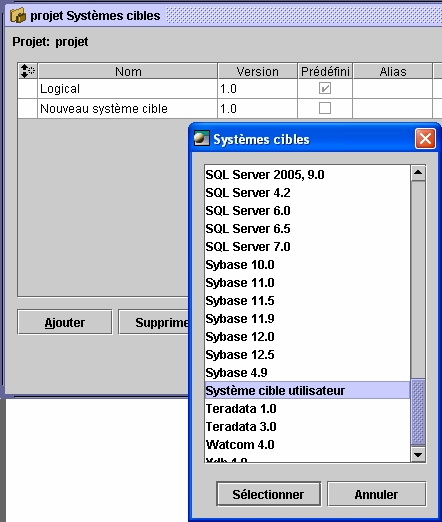
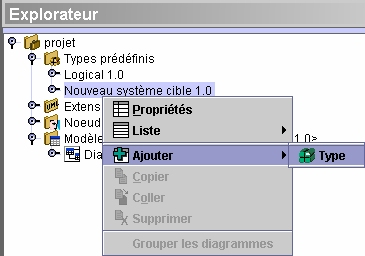

Le
système cible utilisateur
Open ModelSphere vous permet de définir vos propre
systèmes cibles. Cette fonctionnalité vous donne la
possibilité de créer des types de données
personnalisés pour des systèmes de
gestion de base de données qui ne sont pas pris en charge par Open ModelSphere.
Deux méthodes peuvent être utilisés pour
créer un système cible utilisateur.
Créer un système cible
utilisateur
à partir d'un projet
Cliquez
sur Outils > Ajouter/Supprimer un
système cible, appuyez sur Ajouter et choisissez dans la liste
des systèmes cibles disponibles l’item Système Cible Utilisateur.
Ajout d'un système cible
utilisateur :

Si l'item système cible utilisateur n’est pas
présent il faut ajouter le fichier UserTS.typ dans le répertoire
Targets installé avec l'application. Ce fichier ne
doit pas être modifié. Nouveau système
cible utilisateur sera créé sous le
noeud Types Prédéfinis C'est à partir de ce paquetage que l'utilisateur peut
définir des types de données personnalisés.
Cliquez le bouton Ajouter
 de la barre d'outils de création ou choisissez Edition >
Ajouter >Type.
de la barre d'outils de création ou choisissez Edition >
Ajouter >Type.
Ajout d'un type de
données :

Créer un système
cible utilisateur avec le gabarit
"UserTypeFileTemplate.typ"
Le
fichier gabarit "UserTypeFileTemplate.typ" se trouve dans le
répertoire \Targets\Template du répertoire
principal de Open ModelSphere. Copiez ce fichier dans le
répertoire Target de Open ModelSphere pour
éditer un nouveau fichier .typ. Ce fichier contient une liste de types
prédéfinis pour un système cible donnée.Open ModelSphere
reconnaîtra ce fichier au même titre que
les autres prédéfinis. Il sera donc disponible dans la
liste des systèmes cibles et ajoutable à l'application.
Un exemple est montré plus bas.
Notez que le
root-ID est 2000 et doit le demeurer pour le différencier des
systèmes cibles utilisateur sans fichier type.
Méthode
de création d’un fichier type pour un système cible
utilisateur
// CECI EST UN FICHIER GABARIT POUR LA
CRÉATION DE SYSTÈME CIBLE UTILISATEUR
// $Date: 06-03-28 11:15 $
//
// Types prédéfinis
NOTE: Le TARGET-ID doit être numéroté de 2000 et
plus
Le ROOT-ID doit demeurer 2000.
NAME= Mon Système Cible
VERSION=2.0
TARGET-ID=2003
ROOT-ID=2000
NOTE : Les types utilisateur
doivent être édités de cette
façon.
La première colonne est la liste des types du système
utilisateur
La deuxième est la
liste des types logiques (voir logical.typ)
correspondants aux types utilisateurs.
La correspondance avec un type logique
est optionnelle.
// type, type logique (optionnel)
TYPES
{
CHAR,
CHARACTER
CHARACTER, CHARACTER
DATE,
DEC,
DECIMAL
DECIMAL, DECIMAL
FLOAT,
FLOAT
INT,
INTEGER
INTEGER, INTEGER
NUMERIC, NUMERIC
NUMBER, NUMERIC
REAL,
REAL
SPECIAL TYPE,
}
NOTE : Les alias sont optionnels.
ALIASES
{
CHAR, CHARACTER
NUMBER, NUMERIC, DECIMAL,
DEC, REAL
INT, INTEGER
}